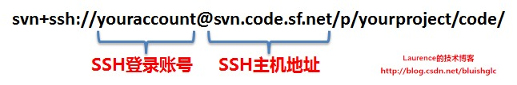
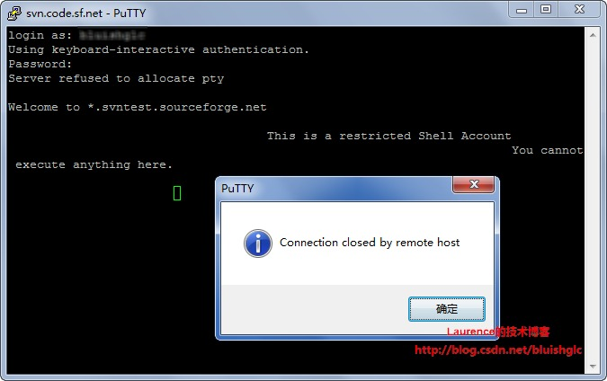
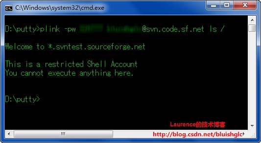

SVN+SSH协议工作方式全解析，以Sourceforge为例讲解如何在Windows下配置TortoiseSVN和Subclipse访问SVN+SSH协议的Repository
简单地说，SVN+SSH (SVN over SSH) 协议的工作方式就是在SVN客户端与 服务器 端先建立一个SSH连接，然后通过SSH连接推送命令和传输数据，从而借助SSH实现更加安全的SVN通信。使用SVN+SSH方式访问Repository，与普通的http或https方式最大的不同，或者说仅有的不同就是通过SSH安全认证登录到远程主机建立SSH连结，如果这一步完成了，剩下的就是纯SVN操作了。在正式开始前，请选择安装本文讨论和使用到的下列工具：
PuTTY ： http://www.chiark.greenend.org.uk/~sgtatham/putty/download.html
TortoiseSVN: http://tortoisesvn.tigris.org/
Subclipse: http://subclipse.tigris.org/servlets/ProjectProcess?pageID=p4wYuA
本文原文 链接 ： https://laurence.enlightgram.com/others/svn-ssh-sourceforge/ 转载请注明出处！
一、从SVN+SSH://地址谈起
当我们试图检出一个使用svn+ssh协议的工程时，除了必需的帐号密码（当然正常情况下你应该还有一个密钥和密钥的密码短语passphrase，关于密钥我们会在后面讨论 ) 我们唯一得到的就是一个svn+ssh://开头的Repository地址了。理论上，使用这个地址和我们掌握的密码就可以访问远程主机的Repository了。那我们来看一下SVN+SSH://格式的地址告诉了我们（SVN客户端）什么 ？下面是一个来自sourceforge的典型的工程地址：

这个地址是sourceforge工程的标准SVN地址格式，youraccount代指你的sourcegorge帐号（帐号部分不是必需的，你可以在连接SSH主机时通过其他方式告知你的登录帐号，比如使用putty保存好的session,这种例子会在后面的实验三中演示），yourproject代指你的工程。如果我们从SSH的角度来解读这个地址，那么这个地址告诉SSH了客户端两个重要信息：1. SSH远程主机的地址：svn.code.sf.net，2. 登入SSH远程主机的帐号:youraccount。实际上，基于这两个信息再加上你掌握的帐号密码，我们就可以登录svn.code.sf.net了，一个简单的验证方法就是使用PuTTY连接一下svn.code.sf.net，输入你的帐号密码登入，之后就会得到如下的消息：

“Welcome to *.svntest.sourceforge.net ” 表示你已经登录成功，但是SSH主机不会为你分配终端，然后直接关闭了连接，不过这并不重要，关键是我们已经确认使用地址中给出的主机地址和帐号是可以建立SSH连接的。
二、TortoiseSVN是如何自动登录到SSH远程主机的
确认了可以建立SSH连接后，我们可以直接使用TortoiseSVN访问这个地址，不过你会发现，TortoiseSVN会不停地要求你输入帐号密码（这种情况正是下文“实验一”演示的），如果你坚持每次都输入，最后就能得到完整的Repository目录结构，这表明，单独使用Tortoise可以直接访问svn+ssh://youraccount@remoteserver/xxxx/xxxx 格式的地址，不过唯一的麻烦是需要不停地输入密码。（实际上这是因为TortoisePlink在使用口令认证的方式进行登录，而出于安全原因，口令永远不会被缓存，所以必需每次输入！稍后我们会进一步解释这个过程）
现在我们来思考上述过程背后的一个实现细节：通过给出的"svn+ssh://"地址，TortoiseSVN知道了远程主机地址和帐号，那TortoiseSVN是如何自动登录到SSH远程主机的呢？是不是TortoiseSVN也内置了像putty那样的SSH客户端工具来建立SSH连接呢？答案应该是肯定的，不过我们并没有在使用过程中看到Tortoise像putty那样提供一个配置界面让用户配置主机地址和帐号，而是自动从地址中得到这些信息建立了SSH连接，也就是说TortoiseSVN的这个SSH连接工具不是像putty那样手动的交互式的连接工具，而应该是一个可以直接调用执行的命令行工具，没错，这个工具就是 TortoisePlink ，它位于TortoiseSVN安装目录下的bin子目录中，在svn+ssh协议下，TortoiseSVN向远程主机发送的所有请求都是先通过TortoisePlink建立SSH连接通道后传递的。那TortoisePlink是一种什么样的工具呢？实际上，它就是PuTTY提供的SSH命令行连接工具plink， TortoisePlink可能根据Tortoise的需要对plink进行了一层简单的包裹，但是它本质上就是plink，TortoisePlink的参数和使用方法与plink是一样的，所以我们的问题聚焦在：plink是什么？它是如何工作的？
三、Plink，幕后的关键角色
plink是一个SSH的命令行连接工具。简单地说，通过一条plink命令，我们可以直接通过SSH向远程主机推送命令执行或是传递数据。关于plink详细的介绍和使用方法可以参考putty官方用户手册： http://the.earth.li/~sgtatham/putty/0.58/htmldoc/Chapter7.html . 这里我们简单看一下plink的命令行格式，就明白它是用来做什么的了。
plink [options] [user@]host [command]
举个例子，假如有一个远程SSH主机192.168.1.101，登入帐号root, 密码1234， 如果我们想登录这个主机查看一下根目录下的结构，我们可以通过这样一条plink命令实现:
plink -pw 1234 root@192.168.1.101 ls /
同样的，仿照一开始我们使用putty访问svn.code.sf.net，我们现在使用plink来连接一下，并推送一个ls /命令，输入：
plink -pw yourpassword youraccount@svn.code.sf.net ls /
我们会得到这样的响应：

同样，我们得到了“Welcome to *.svntest.sourceforge.net”提示，表示我们也登入成功了，不过受到sourceforge的限制，我们不能执行任何命令。所以我们可以看出： plink的主要用途是让脚本或者某些自动化处理能通过命令行以非交互的方式连接到远程ssh主机执行命令。很显然，在SVN+SSH协议下，SVN客户端工具正需要这样的命令行工具建立SSH连接进行SVN操作！ 这就是为什么TortoiseSVN需要TortoisePlink的原因。
到这里，关于“TortoiseSVN是如何自动登录到SSH远程主机”问题的答案已经很清楚了：在SVN+SSH协议下，所有TortoiseSVN与远程主机的通信，都是通过TortoisePlink建立的到远程主机的SSH连接进行的！
四、PuTTY与Plink之间的“秘密”：共享PuTTY Session
了解了plink之后，对比一下putty，它们之间的关系其实很像数据库客户端与数据库命令行工具的关系。如果说putty是一个需要一系列手动配置（如远程主机地址，用户名等等）可以连接上远程数据库进行管理的“客户端”（如sql server的SQL Server Management Studio或者mysql的HeidiSQL），那么plink就是一个可以直接连接到远程数据库执行sql的“命令行工具”（如sql server的osql.exe或者mysql的mysql.exe）。
但是，putty与plink的关系比我们想像的还要“紧密”一些，它们之间存在着一条非常重要的“纽带”，这条“纽带”就是：plink可以直接获取PuTTY里保存的session,使用session的配置连接远程主机。这一点plink的文档里有特别地说明：
If you have already set up a PuTTY saved session, then instead of supplying a host name, you can give the saved session name. This allows you to use public-key authentication, specify a user name, and use most of the other features of PuTTY。
是的，让plink使用PuTTY里保存好的session, 可以复用session的配置，更重要的是PuTTY的session可以指定用户名、使用密钥登录以及其他一些特性，plink使用PuTTY的session即可以简化命令行，还可以借助PuTTY session实现一些更丰富的配置。
实际上，putty会将所有的session信息保存到注册表中（位置是HKEY_CURRENT_USER\Software\SimonTatham）, PuTTY下的所有工具（如Pageant）如果需要都可以得到这些session的信息，甚至包括第三方工具可以从注册表中读取这些信息。是的，你可能猜到了， **TortoisePlink也可以使用这些Session！这是TortoiseSVN可以使用密钥认证登录远程主机的关键！因为TortoiseSVN本身没有提供导入密钥的功能，TortoisePlink也没有，但是Putty有，利用Putty配置的Session就可以实现了。
五、SSH的安全认证方式**
前文我们提到使用TortoiseSVN直接访问SVN+SSH://开头的Repository地址时总是要求输入密码，原因很简单， TortoiseSVN并不与SSH远程主机建立在线的长连接，而是有请求时才通过TortoisePlink建立一个SSH连接传递请求和响应，然后断开SSH连接。而TortoiseSVN要列出Repository目录结构需要进行多次数据传递，自然每次请求建立连接都需要输入密码。那么有没有不那么麻烦还安全的身份认证呢？当然有，这就是使用密钥进行安全认证。SSH一共支持两种方式的安全认证：
1.‘基于口令’的安全认证
就是帐号+密码的认证方式，这是最普通也是最普遍的一种安全认证方式，前面我们都在使用这种认证方式登录。
2.‘基于密钥的’安全认证
使用秘要生成工具(linux下使用openssh的ssh-keygen，windows下使用PuTTY的puttygen)使用一个公钥和一个私钥，这是一对密钥，公钥会放置于服务器端ssh指定的位置，私钥则由本人妥善保存，一般生成私钥时还会为它设置一个密码短语passphrase,在客户端使用SSH连接Server的时候需要使用这个私钥文件+密码短语进行安全认证。从安全认证的类型上分，这属于Two-factor authentication，这也是非常普遍而且安全性更高的一种认证方式。举个例子：密钥相当于你的银行卡，一个实物凭证， 密码短语相当于你的银行卡密码。密码短语的作用是使密钥的使用更加安全。设想如果你的私钥被其他人获得，而那人又知道你的账号名和远程主机地址，那么他就可以能过这个密钥直接连接到远程主机了，而如果设置了密码短语，即使密钥被其他人获得也不能被使用。关于如何使用ssh-keygen和puttygen生成公钥和私钥对，过程非常简单，本文不再赘述,请参考： http://sourceforge.net/apps/trac/sourceforge/wiki/SSH%20keys 一文的“Key Generation: PuTTY" 和"Key Generation: OpenSSH"两个章节。
回到本节开始的问题，如果不使用密码，使用密钥认证的话就不再需要反复输入密码了（参考下文的实验四）！如果你的密钥设置了密码短语，那么每次访问虽然不要求输入密码了，但是却被要求输入密码短语（参考下文的实验五），解决方法就是打开pageant，添加你的私钥，缓存密码短语，这样即安全又不会要求重复输入密码或密码短语（参考下文中的实验五），是最普遍的配置方式。
六、一系列的验证实验
在了解了TortoiseSVN访问SSH+SVN协议时的工作方式，以及plink,putty和使用密钥方式进行认证之后，我们把这些结合在一起，来做一系列有趣的验证实验，通过实验我可以清晰地体会出这些工具到底是如何工作的了。需要特别说明的是：实验四，五，六需要自已生成公钥和私钥，生成方法参考 http://sourceforge.net/apps/trac/sourceforge/wiki/SSH%20keys 一文的“Key Generation: PuTTY" 和"Key Generation: OpenSSH"两个章节；同时，还需要将公钥上传到sourceforge服务器，sourceforge管理密钥的页面是 http://sourceforge.net/account/services ，你可以在这里找到上传页面。长传之后最长需要等待10分钟，新的密钥就会生效了。
实验一：
清空PuTTY里保存的所有session, 关闭Pageant。使用Tortoise直接访问svn+ssh://youraccount@svn.code.sf.net/p/yourproject/code/，
现象：可以访问，但需要不停地输入sourceforge账号密码。
结论：每一次请求发生时，Tortoise（确切地说是TortisePlink)都使用账号youraccount先连接到远程ssh主机svn.code.sf.net,由于没有任何其他地方保存密码或使用密钥，所以每次连接都需要输入密码。
实验二：
清空PuTTY里保存的所有session, 关闭Pageant。去掉原地址中的账号部分，使用Tortoise访问svn+ssh://svn.code.sf.net/p/yourproject/code/，
现象：无法访问
结论：既未在地址中指定登录账号，又没有对应的putty session, Tortoise不知道使用什么账号登录，所以连接失败。
实验三：
清空PuTTY里保存的所有session,然后建立一个名为svn.code.sf.net的session，主机地址为svn.code.sf.net, 特别地，在Connection->Data页面的Auto-login username的输入框中填入你的账号youraccount，保存此session，关闭Pageant，同样去掉原地址中的账号部分，使用Tortoise访问svn+ssh://svn.code.sf.net/p/yourproject/code/，
现象：可以访问，但需要不停地输入sourceforge账号密码。
结论：虽然在地址中没有指定登录账号，但是Tortoise却找到了对应的putty session，既然session中设置了账号,那么Tortoise就使用这个账号登录了，当然，密码是不能保存的，所以每次请求都需要输入密码。
实验四： （特别说明：实验四中导入的密钥是不需要密码短语（passphrase）的！）
清空PuTTY里保存的所有session,然后建立一个名为svn.code.sf.net的session，主机地址为svn.code.sf.net, 特别地，生成一对公钥、私钥对(私钥无passphrase)，将公钥上传到sourceforge, 在本地putty的Connection->Data页面的Auto-login username的输入框中填入你的账号youraccount，在Connection->SSH->Auth页面的Private key file for authentication输入框中输入你的私钥位置，保存此session，关闭Pageant，同样去掉原地址中的账号部分，使用Tortoise访问svn+ssh://svn.code.sf.net/p/yourproject/code/，
现象：可以访问，而且不需要输入sourceforge账号密码。
结论：Tortoise从对应的putty session中获取了账号和密钥,那么Tortoise就使用这个账号和密钥登录，由于指定了密钥，ssh使用密钥进行验证，所以不再需要输入密码！
实验五： （特别说明：实验五中导入的密钥是有密码短语（passphrase）的！）
清空PuTTY里保存的所有session,然后建立一个名为svn.code.sf.net的session，主机地址为svn.code.sf.net, 特别地，生成一对公钥、私钥对(私钥含passphrase)，将公钥上传到sourceforge, 在本地putty的Connection->Data页面的Auto-login username的输入框中填入你的账号youraccount，在Connection->SSH->Auth页面的Private key file for authentication输入框中输入你的私钥位置，保存此session，关闭Pageant，同样去掉原地址中的账号部分，使用Tortoise访问svn+ssh://svn.code.sf.net/p/yourproject/code/，
现象：可以访问，不需要输入账号密码，但需要不停地输入passphrase。
结论：Tortoise从对应的putty session中获取了账号和密钥,那么Tortoise就使用这个账号和密钥登录，由于指定了密钥，ssh使用密钥进行验证，所以不再需要输入密码！但是，由于密钥设置了passphrase, 因此每次请求时必须输入。
实验六：
保留实验五的所有设置，打开pageant工具，导入实验五使用的私钥，在导入时要求输入一次密码短语。然后重新使用Tortoise访问svn+ssh://svn.code.sf.net/p/yourproject/code/，
现象：可以访问，不需要输入账号密码，也不再需要输入passphrase。
结论：Tortoise从对应的putty session中获取了账号和密钥,那么Tortoise就使用这个账号和密钥登录，由于指定了密钥，ssh使用密钥进行验证，所以不再需要输入密码！而由于密钥和passphrase被加入到了pageant, 换句话说就是使用pageant这个认证代理认证过了密钥和passphrase,因此每次请求时通过代理实现了密钥和passphrase的配对认证，因此不再需要输入passphrase。
七、步入正轨，SVN+SSH常规配置和连接方式 （密钥认证+Pageant缓存密码短语）
其实到这里所有的都已经讲完了，在Windows下，SVN+SSH的常规配置和连接方式就是通过PuTTY配置好与SVN+SSH:// 地址中指定的主机名同名的session,设置帐号名和密钥，再打开 Pageant缓存密码短语就可以了， 具体参考实验六 就可以了。
八、配置Subclipse使之能访问SVN+SSH协议的Repository
如果TortoiseSVN的配置已经成功，那么Subclipse的配置就非常简单了，因为Subclipse也支持ToitoisePlink，只要我们告诉Subclipse ToitoisePlink的位置就可以了，具体方法为：本家配置一个系统环境变量，变量名为SVN_SSH，值是TortoisePlink的路径，例如 C:\Program Files\TortoiseSVN\bin\TortoisePlink.exe,注意路路分隔符是\.然后配置Subclipse插件使用JavaHL，重启eclipse即可。
九、代理环境下的配置
最后补充一点：如果你的工作网络是使用代理上网的，那么你需要在创建putty saved session时，在Connectiong->Proxy项上设置代理服务器的地址、端口和类型，从这个页面的proxy command输入框中可以看到putty也是使用了connect实现了ssh代理的。同时，在Tortotise也需要设置代理。Subclipse的代理设置请参考此文 https://laurence.enlightgram.com/others/subclipse-http-proxy/
SVN+SSH协议工作方式全解析，以Sourceforge为例讲解如何在Windows下配置TortoiseSVN和Subclipse访问SVN+SSH协议的Repository
https://laurence.enlightgram.com/others/svn-ssh-sourceforge/